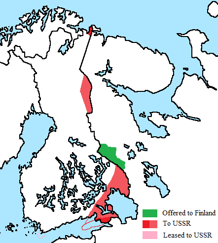

The outcome of the war and the surprising victory of Finland directly affected
decisions made by the German and Soviet armies throughout WW2. This is because once Germany saw
that a small and weak country like Finland could win a war against the Soviet Union, they underestimated
the true power of the Soviet army

We know the war started because the Soviet Union (USSR) wanted to expand its empire further West so they tried to invade Finland. The Soviet forces thought Finland would offer no resistance but were actually fought off by them. I think judging by the fact the Soviet Union w recklessly invaded a peaceful country without consideration for the civilians that would be affected by the conflict, I believe Finland is more justified here because they were defending their land and had no choice.
Yellow: Finnish land after the war Orange: USSR territory Red: Territory USSR took from Finland
